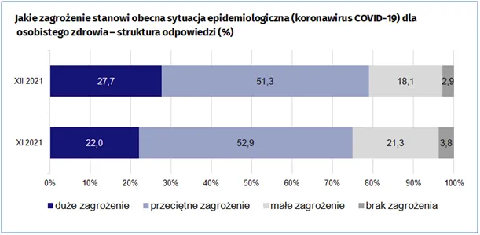
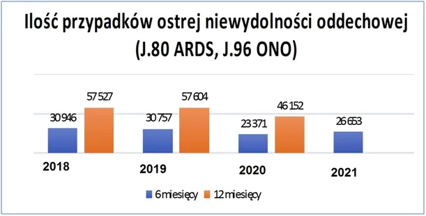
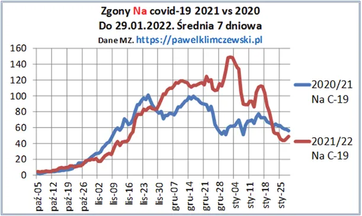

Strachy na lachy 2
W listopadzie pisałem o masowym straszeniu https://pawelklimczewski.pl/2021/11/19/strachy-na-lachy i jak widać z grudniowego badania GUS-u trochę się udało. 5% więcej niż listopadzie widziało większe zagrożenie dla własnego zdrowia z powodu c-19. Jednak aż ponad 70% ludzi postrzega to zagrożenie jako przeciętne lub mniejsze! To jest dla nas bardzo dobra informacja, bo badanie robiono w grudniu, gdy byliśmy w kiepskiej formie a podziały i napięcia społeczne sięgały zenitu. W obliczu takich danych lepiej rozumiemy styczniowe słowa prezesa, że ze szczepieniami "trzeba iść na całość".

Od samego początku widać, że "pandemia", z małymi wyjątkami, jest ponad podziałami politycznymi i jest w zasadzie obowiązkowa na całym świecie bez względu na brak logiki w stosowanych zabiegach. Obowiązkowy jest też wysoki poziom "wyszczepienia" a z wykresu się dowiadujemy dlaczego Polacy tak mało ochoczo chcą się poddać eksperymentalnej kuracji, nie widzą dużego zagrożenia w wirusie a wieść o fatalnych skutkach szczepień w narodzie jest obecna. Wszystkie paradoksy dopełnia news od byłego prezydenta Wałęsy o traumatycznych przejściach choroby mimo zaszczepienia. Wieść, że ciało odchodzi od kości to nie jest dobra reklama!
Od dwóch lat opisałem setki tabel i wykresów danych oficjalnych pokazując, że rola c-19 w hekatombie zgonów jest znikoma np. ten wpis z marca 2020. Na łamach dorzeczy.pl dr Milewski wrzuca granat do tego propagandowego szamba. Wynajduje w danych oficjalnych liczbowe zestawienie z ostatnich lat tzw. ARDS - ostrej niewydolności oddechowej. Chodzi o to, że c-19, jeśli zabija to tylko w ten sposób. Wszystkie inne zgony z wymazanym "testem" to naciąganie statystyki. Rozległy zawał, test, przyczyna zgonu = c-19. Tragifarsa.

ARDS może być spowodowany setkami patogenów, w każdym roku wygląda to inaczej, raz to wirus grypy dominuje w innym roku jakiś inny, ale z roku na rok liczby są podobne, ok 50 tys. takich przypadków. W latach 2018/19 było to ok. 57 000, z czego w pierwszym półroczu po ok. 30 tys. W 2020 nadchodzi pandemia i mamy... 24% mniej takich przypadków za pierwsze półrocze! Nadchodzi jesienna hekatomba zgonów i po całym 2020 mamy 20% mniej takich przypadków. O co chodzi? Gdzie pandemia? Gdzie stosy trupów?
W obliczu tak słabych wyników kampanii straszenia wymyślono nową super broń. W ostatnich dniach robi się blisko 180 000 testów, co jest podobno w Polsce, niemożliwe ze względu na wydajność sieci laboratoriów. Już wiemy, że zimą ok. 30% testów pokazuje plusa, co daje niecałe 60 tys. "zakażonych". To nie robi wrażenia, zbyt zgrana płyta. Nowa broń to "autotest" w wyznaczonych aptekach ludzie dostaną za darmochę test + 30% szansy na darmowy tydzień urlopu. Coś czuję, że idziemy na 150-200 tys. zakażonych.

Tymczasem mimo setek tysięcy zakażeń do szpitali trafia dziennie kilkaset osób z czego umiera "na covid" ok. 50 na dobę, przy normie w Polsce na choroby układu oddechowego w granicach 100 osób na dobę. Gdy do tego przyłożymy statystyki ARDS w latach 2020/21 to już wiemy (po raz setny ?), że ktoś tu mocno kręci.
Paweł Klimczewski